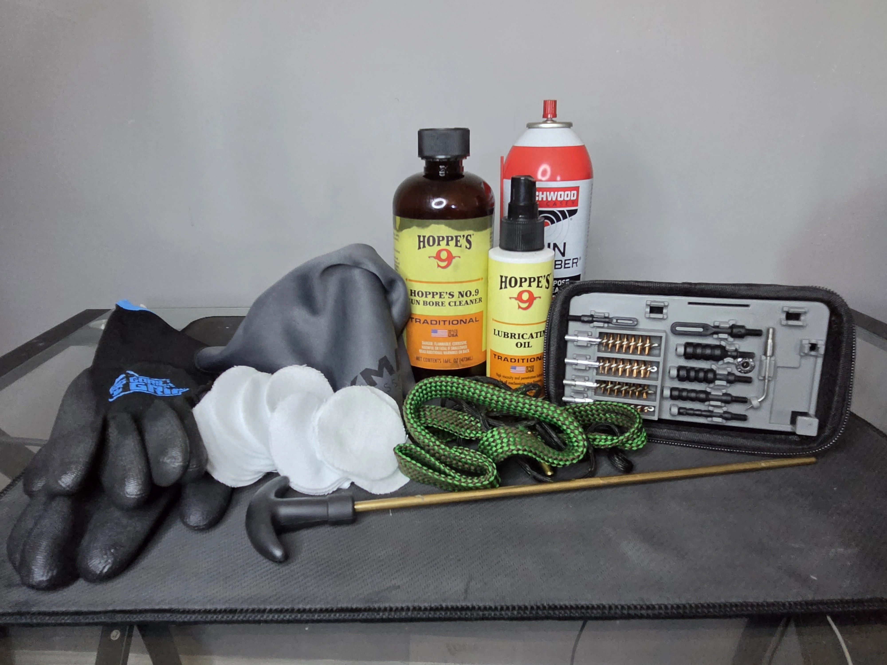

Cleaning Solvent
A good cleaning solvent will break down caked on carbon and grit. Look for products designed specifically for firearms.
Having the right tools makes cleaning faster and more thorough.

A good cleaning solvent will break down caked on carbon and grit. Look for products designed specifically for firearms.
Like a car, a gun requires oil or lubricant to function at its best. Look for products designed specifically for firearms.
Cleaning inside of the barrel can be quite difficult, using a Bore Brush will make cleaning the barrel easier. Be sure to use a caliber-specific brush or snake.
The use of cleaning material such as mirco fiber cloth or cleaning patchs are nice deticated tools to wipe and clean your firearm. Avoid using personal clothing as chemicals can leave stains. When purchasing a cleaning kit make sure it is caliber-specific to the firearm you are cleaning.
An owners manual is a good reference for you to use if you are unfamiliar with the particualar firearm you are cleaning. It will show you how to disassemble the gun and includes important parts to clean and lubricate.